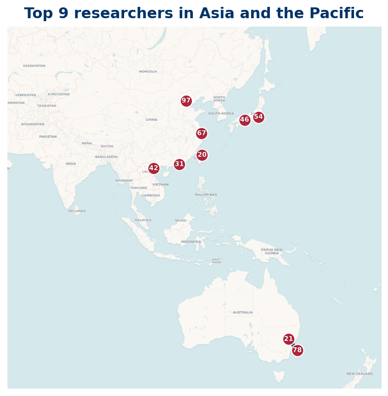

19 researchers are based in Asia and the Pacific; 14 researchers mapped, 5 researchers location not available (institution geocode pending).
Listing
| Rank | Name | Institution | Country |
|---|---|---|---|
| 5 | Weiping Li | - | CN |
| 14 | Tianze Wang | Henan Academy of Sciences | CN |
| 25 | Julie Tzu-Yueh Wang | Academia Sinica | TW |
| 35 | Roger J. Cook | Queensland University of Technology | AU |
| 37 | Quanwu Mu | Xian Polytechnic University | CN |
| 39 | Akinari Hoshi | Waseda University | JP |
| 47 | Wenxu Ge | North China University of Water Resources and Electric Power | CN |
| 52 | Isao Wakabayashi | Seikei University | JP |
| 55 | S. G. Dani | UM-DAE Centre for Excellence in Basic Sciences | IN |
| 57 | Jose Arnaldo B. Dris | De La Salle University | PH |
| 58 | Igor E. Shparlinski | UNSW Sydney | AU |
| 61 | Si Duc Quang | Hanoi National University of Education | VN |
| 67 | Stephan Baier | Ramakrishna Mission Vivekananda Educational and Research Institute | IN |
| 71 | Veekesh Kumar | Indian Institute of Technology Dharwad | IN |
| 75 | Huafeng Liu | Shandong Normal University | CN |
| 77 | Kunrui Yu | Hong Kong University of Science and Technology | HK |
| 79 | Wayne Peng | University of Science and Technology of China | CN |
| 84 | Yu Yasufuku | Waseda University | JP |
| 95 | QiMing Yan | Tongji University | CN |